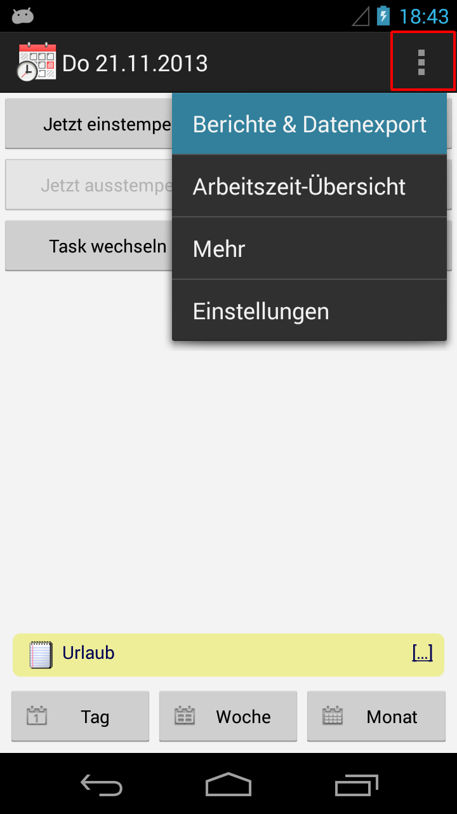
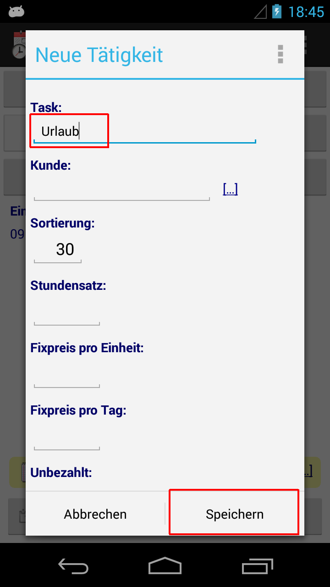

Zeiterfassung - Urlaub und Feiertage
Für die Verwaltung der Urlaubstage existieren nachfolgende zwei Optionen.
Option 1 ist einfacher in der Handhabung, mit Option 2 wird sichergestellt dass keine Sollstundenabweichung auftritt.
Beachte auch die unten erwähnten Hinweise zu "Wochensoll-Abweichung" und "Kopieren".
(A1) Urlaub, Option 1: Tagesnotiz
• Erfassung (Bild 1): Trage 'Urlaub' als Tagesnotiz ein. Tipp: Benutze die Standardnotizen unter [...] rechts
• Auswertung (Bilder 2&3): Öffne Bericht E1 mit Filter 'Urlaub' auf Tagesnotiz. Tipp: mit [...] können zuletzt benutzte Filter wiederverwendet werden.
 |
|
 |
|
 |
(A2) Urlaub, Option 2: Zeitblock mit Task
• Erfassung (Bild 1): Trage deine Sollzeit als Zeitblock ein, z.B. 09:00 bis 17:00. Setze als Tätigkeit 'Urlaub'.
• Falls Task 'Urlaub' nicht existiert dann erfasse diesen zuerst (langer Klick auf die 'Task' Zelle öffnet Bild 2)
• Auswertung (Bild 3): Öffne Bericht E1 mit Task-Filter 'Urlaub'. Tipp: mit [...] können zuletzt benutzte Filter wiederverwendet werden.
 |
|
 |
|
 |
(B) Öffentliche Feiertage
Verwende dasselbe Vorgehen wie oben erwähnt (sprich: Tagesnotiz "Feiertag" oder Tagesblock mit Task "Feiertag" eintragen).
Alternativ kann dieser Tag auch einfach leer gelassen werden (aber beachte den nachfolgenden Punkt).
(C) Abweichungen in der Wochensollzeit
Falls Abwesenheiten (Urlaub/Feiertage) nur als Tagesnotiz bzw gar nicht erfasst werden und "Wochensollzeit" aktiviert ist so führt dies zu Abweichungen in der Sollzeit (Zelle "Delta W").
Korrigiere dies indem du die Wochensollzeit für einzelne Wochen explizit übersteuerst.
• Tipp: Langer Klick auf der "Delta W" Zelle auf der Hauptseite öffnet ebenfalls den "Wochensoll übersteuern" Schirm
(D) Kurze Arbeitstage
Die Tagessollzeit kann für einzelne Tage explizit übersteuert werden - beispielsweise für verkürzte Arbeitszeit vor Feiertagen, mit 7 statt regulär 8 Stunden Sollzeit.
(E) Abbau von "Delta" Überzeit
Die App kenn kein Überzeit-Konto oder ähnliches, die kumulierte Überzeit (Ist- gegenüber Sollzeit) lässt sich jedoch via Seite "Übersicht" ausweisen
(siehe hierzu Delta Übersicht).
Das aufgelaufene "Delta" Total kann ausserdem über Einbuchen eines "Leereintrages" abgebaut werden - weil die Tagesarbeitszeit genau null (00:00) ist wird das gesamte Tagessoll als Minus gerechnet.
Dies lässt sich bei Bedarf auch mit (D) kombinieren (z.B. Tagessoll für diesen Tag auf 16:00 Stunden übersteuern)

(F) Massenerfassung von Notizen, Kopieren von ganzen Tagen
Unter Menü/Mehr sind zwei Funktionen gelistet welche die Mehrfacherfassung vereinfachen
• Benutze "Notiz für mehrere Tage" um denselben Text als Tagesnotiz zu vergeben, beispielsweise "Urlaub" von 02.-21.September jeweils Mo-Fr
• "Tage kopieren" übernimmt alle Einträge (Stempel und Tagesnotiz) der Vorlage ("zu kopierender Datumsbereich") und kopiert diese an den Zielzeitraum ("Kopieren nach").
Benutze die Funktion mehrfach falls ein einzelner Tag auf mehrere Tage kopiert werden soll (z.b. Vorlage 02.September kopieren nach 03.Sept, kopieren nach 04.Sept, etc).